|
RBC - RODA JC (1-4) 11 februari 2004 |
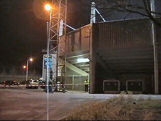
Het knusse V&G stadion.
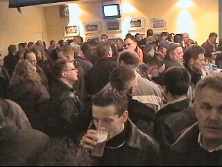
Het gezellige home van de Roosendaalers waar
je met goed fatsoen een pilsje kan pakken.
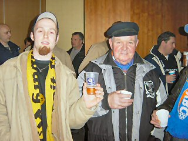
Jong en oud, RJC en RBC, pils en koffie.
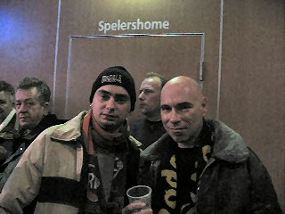
Cyndi was er niet bij deze keer, dus moet je het
doen met deze mollenkoppen ;-)
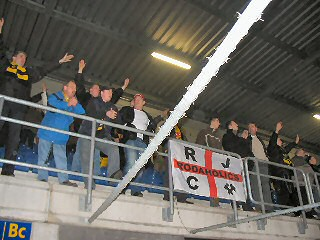
Een kleine 100 Rodasupporters op deze koude
woensdagavond.
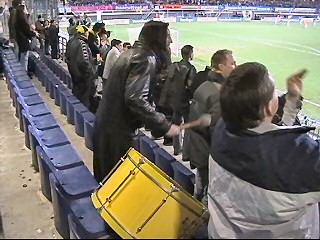
Heute hauen wir auf die Pauken...
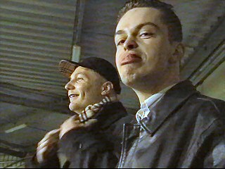
De Ioannis Anastasiou Fanclub.
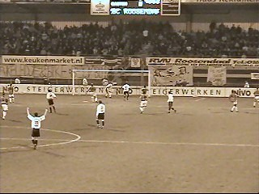
Sergio scoort via het been van Danny Hesp (43').
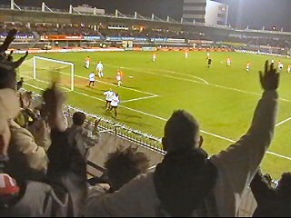
RBC kreeg talloze hoekschoppen en zette Roda
flink onder druk maar hier scoort Arouna Kone
0-2 in de 71e minuut.
RBC gaat nog feller aanvallen. Invaller Luyten
scoort in de 84e min. de 1-2 die iedereen voelde
aankomen. Van Dessel en invaller IvanVicelich
beslisten de wedstrijd in de resp. 87e en 90e min.
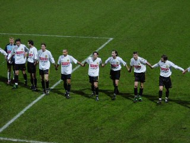
Geen beste wedstrijd, maar toch 3 punten!
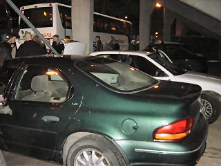
Aan de vriendelijke stewards en het perfecte
parkeerbeleid kunnen veel clubs een voorbeeld
nemen!
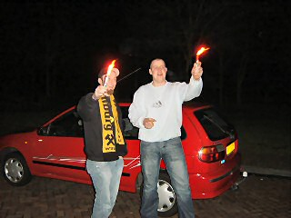
Vreugdevuurtje onderweg.
© Koempels
Pleasure Dome